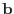
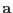
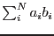
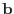
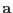
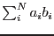

XMM-Newton Science Analysis System
bkgfit (ebkgmap-2.9) [xmmsas_20170112_1337-16.0.0]
Input Files
There are three types of FITS image input, listed below. All input images must share the same dimensions.
- A Poissonian image
 , that is, an image for which the values are random, non-negative integers which obey a Poisson probability distribution about a conjectural image of expectation values
, that is, an image for which the values are random, non-negative integers which obey a Poisson probability distribution about a conjectural image of expectation values  . This image may have any numeric data type, but it is converted within the task to 16-bit integer.
. This image may have any numeric data type, but it is converted within the task to 16-bit integer.
- A list of
 model component images . The task bkgfit
calculates amplitudes  such that
 approximates , the expectation value of . The component images may have any numeric datatype but are converted within the task to 32-bit reals. Negative values are not permitted in any component, no component image may be all zero, and components which are too similar should be avoided.
model component images . The task bkgfit
calculates amplitudes  such that
 approximates , the expectation value of . The component images may have any numeric datatype but are converted within the task to 32-bit reals. Negative values are not permitted in any component, no component image may be all zero, and components which are too similar should be avoided.
- (Optional) a mask image. This may have any numeric data type but is converted within the task to 1-bit logical. The conversion rule is that values
 give TRUE, all others FALSE. Only those pixels for which the mask is TRUE are fitted.
give TRUE, all others FALSE. Only those pixels for which the mask is TRUE are fitted.
XMM-Newton SOC/SSC -- 2017-01-12